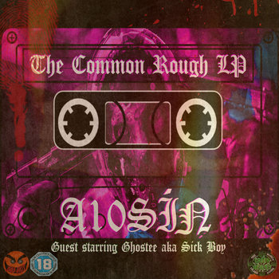

Common Rough LP
A10Sin
Here we have the sequel to A10Sin's first album, "The Crettin LP" which tells a tale of satanic gangsterism and unruly drug abuse instilled with the soul of A10Sín. Once more, fully produced by DJ Green we get a guest starring role from Dublin's underground phantom "Ghostee", a sea urchin from the bowels of the towers.